Geplande lessen
in Onderwijsvraag
In het scherm van de geplande lessen ziet u het resultaat van uw geplande groepen. In dit overzicht staat per regel een geplande groep met het aantal lesuren dat die groep krijgt.
Het scherm van de geplande lessen is de plek om geplande lessen te koppelen.
U kunt in dit scherm daarnaast:
- het aantal lesuren van een groep aanpassen;
- het aantal docenten van een groep aanpassen (ook in bulk);
- het standaard aantal lessen per docent van een groep aanpassen (ook in bulk);
- de lesvergoeding (aantal klokuur per les) aanpassen (ook in bulk);
- de correctie lesvergoeding aanpassen (ook in bulk);
- de lesvraag handmatig aanpassen (ook in bulk);
- en opmerkingen plaatsen voor de roostermaker of de formatiebeheerder.
 Onderwijs > Geplande lessen
Onderwijs > Geplande lessen
Het scherm van de geplande lessen geeft een overzicht met op elke regel een geplande groep met diens aantal geplande lesuren.
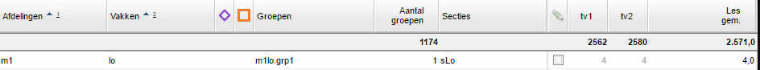
Zo is er een eigen regel voor het vak lo op afdeling m1 voor de geplande groep m1lo.grp1. Het gepland aantal lesuren is in beide tijdvakken 4 uur in de week. U kunt een aantal wijzigingen aanbrengen aan de lessen die gepland worden.
Groepsgebonden lessentabel
Een geplande groep krijgt standaard de reguliere lessentabel. U kunt echter handmatig het aantal lesuren per tijdvak aanpassen:
- Zet een vinkje in de kolom voor het eerste tijdvak.
- Dubbelklik in de kolom van een tijdvak en pas handmatig het aantal lesuren aan.
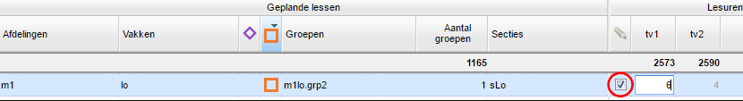
Note
Geplande groepen waarvan de lessentabel handmatig is aangepast zijn te herkennen aan het oranje vierkant. U ziet dit icoontje ook terug bij Geplande groepen en de Lessenverdeling.
Aantal docenten aanpassen
Een geplande groep heeft standaard het aantal docenten dat is ingevuld in het scherm Geplande groepen. U kunt hier echter per groep van afwijken:
- Zet een vinkje voor de kolom Doc / les.
- Dubbelklik in de kolom Doc / les en pas handmatig het verwacht aantal docenten aan.
Aantal klokuren per les aanpassen
Standaard nemen we voor een geplande groep de klokuurvergoeding vanuit het scherm Afdelingen over. U kunt hier echter per groep van afwijken:
- Zet een vinkje voor de kolom Klu / les.
- Dubbelklik in de kolom Klu / les en pas handmatig de klokuurvergoeding aan.
Lesvergoeding aanpassen naar groepsgrootte
Het is mogelijk een staffelfunctie te gebruiken die de lesvergoeding per les regelt op basis van de groepsgrootte. U maakt deze staffelfunctie aan bij Personeel > Formatie > Formatiefuncties. In onderstaand voorbeeld hebben we een functie gemaakt die de lesvergoeding verlaagt bij een kleine groepsgrootte:
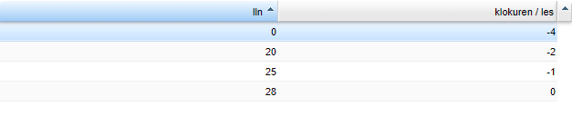
Zodra de groepsindelingen door de roostermaker zijn geupload naar de portal kunt u de lesvergoeding voor lessen met kleinere groepen corrigeren.
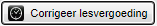
- Ga naar Onderwijs > Geplande Lessen.
- Selecteer de geplande lessen.
- Klik op de knop
. - Selecteer de staffel.
- Klik op de knop
.
In onderstaande afbeelding ziet u een correctie van -4 waardoor de standaard vergoeding van 50 uitkomt op 46.
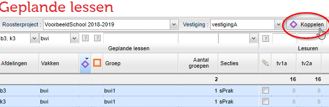
Geplande lessen koppelen
U koppelt lessen van twee of meer groepen als volgt aan elkaar:
- Selecteer twee of meer lesregels met behulp van Ctrl + klik of Shift + klik.
- Klik op de knop
boven de balk.
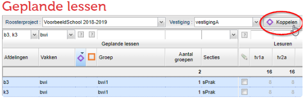
3, Vul eventueel aangepaste informatie of een opmerking toe in het pop-up venster en klik op
U heeft nu een extra lesregel gekregen voor de gekoppelde lessen, te herkennen aan het icoon met de paarse ruit.
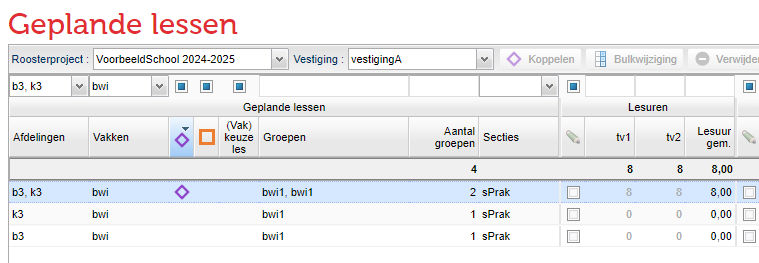
Standaard worden zoveel mogelijk lessen gekoppeld. U kunt dit aantal zelf nog aanpassen:
- Zet een vinkje in de kolom voor de lesuren van het eerste tijdvak.
- Vul handmatig per tijdvak in hoeveel lessen u wilt koppelen.
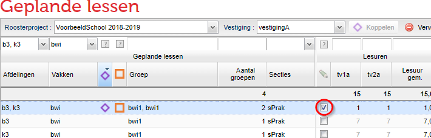
In bovenstaand voorbeeld is één lesuur van het vak bwi gekoppeld tussen b3 en k3. Beide groepen hebben ook nog 7 uur in de week zonder elkaar les.
Twee koppelingen over dezelfde lesgroepen
Het kan natuurlijk voorkomen dat u meerdere koppelingen wilt over meerdere groepen. Denk aan de praktijkvakken.
Een voorbeeld:
We hebben heeft het 14 uurs vak bwi en we willen een koppeling voor 12 uur _van de drie klassen _M4a, M4b en M4c én een koppeling 2 uur _van de groepen _M4a en M4b.
- Koppel allereerst de 3 groepen voor 12 uur zoals hierboven omschreven.
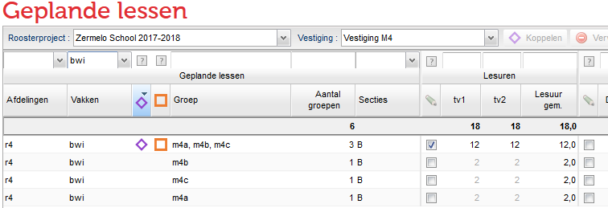
- Zet nu de vinkjes voor handmatig bewerken bij de groep van de kleine koppeling: M4a en M4b.
- Selecteer deze twee lesregels en koppel ze.
- De koppeling krijgt nu de oorspronkelijke lessentabel. Bewerk deze handmatig.
Het resultaat ziet u hieronder.
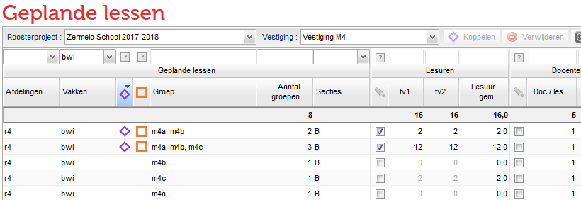
Gekoppelde lessen aanpassen
Het kan voorkomen dat u tijdens het roosterproces of gedurende het jaar een koppeling wilt aanpassen.
De meest eenvoudige manier waarop u dit doet is de volgende:
- Klik in de regel van de gekoppelde les in de kolom groep.
- Filter in het nieuw geopende scherm op het vak en/of de afdeling van de groep die u wilt toevoegen of verwijderen.
- Vink de checkbox uit om een groep te verwijderen uit de koppeling of vink een groep aan om deze toe te voegen.
Onderstaand plaatje toont bovengenoemde stappen van boven naar beneden.
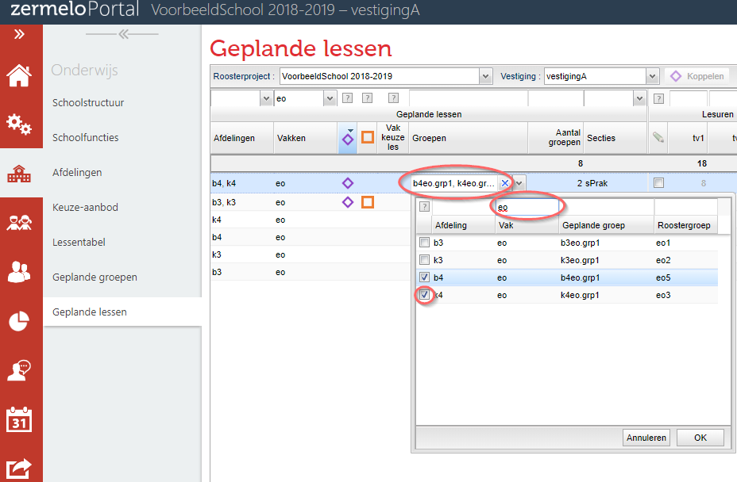
Gekoppelde lessen verwijderen
Het kan voorkomen dat u tijdens het roosterproces of gedurende het jaar een koppeling wilt verwijderen.
De meest eenvoudige manier waarop u dit kunt doen is de volgende:
- Selecteer de regel met de gekoppelde lessen.
- Klik op
.
Let op: in de lessenverdeling is nu ook de docent die op de groep stond van de lessen afgehaald.
Geplande groepen/lesgroepen
In het scherm van de geplande lessen ziet u terug welke lesgroep bij een geplande groep hoort. Dit ziet u als u in de desktop in het Groepen en Lessenscherm de lesgroepen heeft geactiveerd.
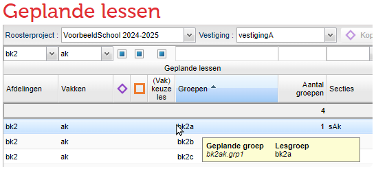
Heeft u nog geen lesgroepen geactiveerd, dan ziet u in het scherm van de geplande lessen de naam van de geplande groep het volgende.
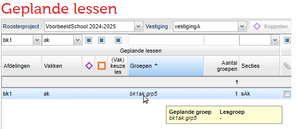
Bij Onderwijs > Geplande groepen (details) ziet en bewerkt u de koppelingen tussen geplande groepen en roostergroepen.